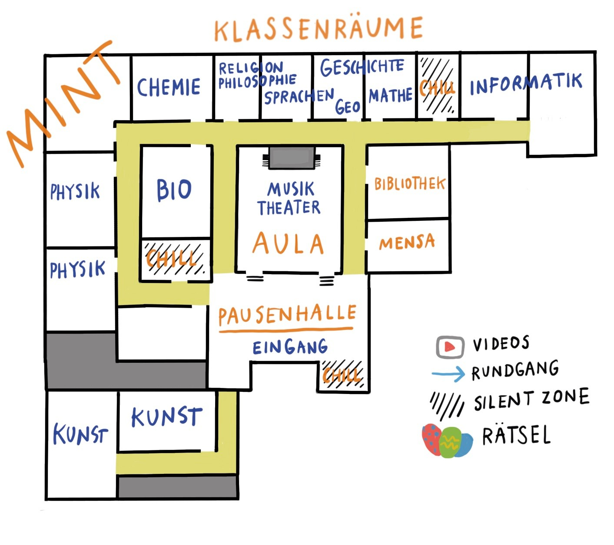

Unser Schüler Tim Gabrikowski aus dem Jahrgang 9 hat auf der Plattform WorkAdventure unsere Schule als digitale Welt erschaffen.
Jetzt kannst du von zu Hause aus einfach so durch das KKG spazieren. Du kannst unseren verschiedenen Fachräume besuchen und darin kurze Filme aus dem Unterricht sehen. Vielleicht triffst du ja auch jemanden. Dann kannst du mit der Person auch chatten, wenn du möchtest.
NEU!
Es gibt nun Konferenzräume!
Gehe in der Pausenhalle unten Links die Treppe nach oben in
den 1. Stock.
In den Räumen gibt es genug Stühle für alle und ein Jitsi
Meeting öffnet sich automatisch.
So besuchst du unsere digitale Schule:
Offne den Link zu WorkAdventure (am besten in Chrome oder Firefox):
Wie möchtest du aussehen?
Wähle deinen Avatar(Spielfigur) aus und gib ihr
einen Namen.
Links oben in der Ecke siehst du verschiedene
Schaltflächen.
Mit der Kaffeetasse kommst du in das Menü.
Hier kannst du zum Beispiel deinen Namen ändern,
oder diese Anleitung aufrufen.
Mit dem Briefumschlag kannst du ein Chatfenster
einblenden.
Hier kannst du Inforamtionen sehen und mit anderen
chatten, wenn sie in deiner Nähe sind.
Unten rechts siehst du ein Kamera Symbol und ein
Mikrofon Symbol.
Hier kannst du dein Videobild und deinen Ton ein-
bzw. ausschalten.
Du startest die Besichtigung im Foyer.
Orientierung:
Grüner Pfeil:
Eingang in einen Raum
Roter Pfeil:
Ausgang aus dem Raum
Gelber Pfeil:
Wegweiser in einen anderen Bereich
Blauer Pfeil:
Rundgang durch die Schule
Hier kannst du
ein Video ansehen, das von Schüler*innen aus der
Schule erstellt wurde.
Hier ist eine
Information
Im Menü(Kaffeetasse) kannst du unter dem Punkt "Karte" eine einfache Karte von der Welt ansehen. Diese Karte siehst du auch unter diesem Block.
Wenn du eine andere Person triffst, bildet sich ein
Kreis um euch.
Ihr könnt jetzt im Chat schreiben oder euch sprechen
(vorher Ton einschalten!)
Viel Spaß beim Erkunden!
Karte:

Das Projekt KKG DIGITAL entstand von und mit:
Tim Gabrikowski (Jahrgang9): Master Mind,
Weltenerschaffer
Anton Tchekov (Jahrgang 12): Assistenz & Unterstützung
Alexandra Kück: Projektlehrerin, Rätsel- und
EasterEgg-Beauftragte
Beratung & Begleitung:
Kulturagent*innen Hamburg